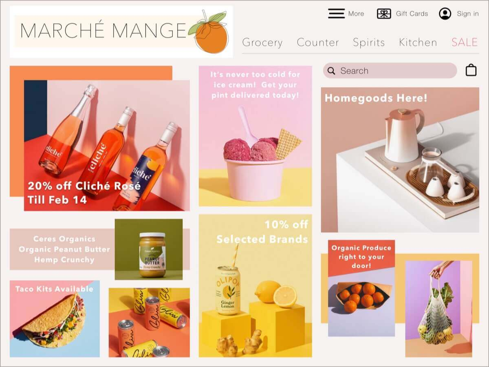

An ecommerce brand that brings the bodega to you. With a global pandemic already under way we
at MARCHÉ MANGE know how tough it can be to get the products you need, so we specialize in
artesinal food products, organically grown produce, ready-to-made healthy meals, a few bar
products and kitchens tools to bring the restaurant to you!
Research
I began this project by conducting research on brand briefs I found online and a few ecommerce
sites. I wanted the look of the brand brief and my app to feel fresh, so I looked at beauty, lifestyle,
and athletic sites to give myself an idea of the direction I wanted to go. I found that all of these sites
had light and bright colors, bold backgrounds, and curved lines to give the site a comforting feel. I
then began implement these features in my designs.
Ideate
After I conducted research, I chose a few color palettes and began to write a brand brief. Here I
detailed our mission statement and guidelines pertaining to color theory, typography, logo
placement, image and writing style. This was extremely helpful when I started to sketch out
wireframes becuase I already had a strong base for my design goals.
Wireframe
I sketched out low-fidelity wireframes to map out a scenario I wanted to test with potential users. I
was happily pleased with the first iteration of the frames so I created a mid-fidelity prototype to test
with my users.
Scenario: You are a new user and would like to sign on to the site as a guest. From there you will
select a product and save it to your favorites. Which steps will you take to accomplish this task?
After conducting the user tests, I made necessary changes to my prototype recommended by the
users. I then added a couple of high-fidelty screens to tie in the entire process indicated through my
user flows. Afterwards, I created a responsive desktop screen to aid my team with a vision for future
iterations.

Conclusion
After making changes to necessary issues, I was satisfied with my designs and created a set of mockups
to display the screens in a real setting. I had some issues in the beginning with my prototype,
but with guidance from users, I was able to resolve this quickly to conduct more tests. I then had the
confidence to work on the responsive screen and finalize the entirety of the project.